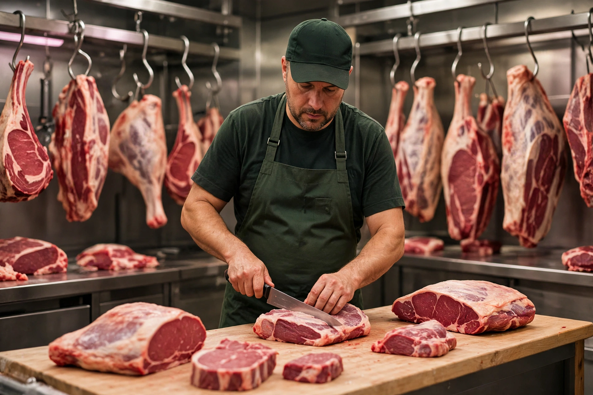

NOSOTROS
Tradición, Selección y Pasión por la Buena Carne.
En La Reserva del Asador creemos que un buen asado empieza mucho antes del fuego. Empieza con la tradicion y la experiencia del buen comer.Somos tu carnicería de confianza. Somos especialistas en carnes. seleccionamos, maduramos y cortamos con tecnica y pasión para asegurar excelencia en cada corte. te acercamos tradición y conocimiento para que vivas la mejor experiencia del asado.

Seleción
Trabajamos solo con cortes premium y productos locales e importados. Cada pieza pasa por un control estricto para que llegue lo mejor a tu mesa.

Maduración
Respetamos los tiempos. Maduramos nuestros cortes para potenciar el sabor, la terneza y que cada bocado sea una experiencia unica.
Corte
Cada corte se hace a mano por expertos. Precisión y cuidado en cada detalle para que disfrutes sin complicaciones.
Detalles Técnicos y Estándares de Calidad
Controles de Calidad
- Temperatura monitoreada 24/7 digitalmente
- Certificado en Seguridad Alimentaria HACCP
- pH testeado para maduracion óptima (5,4-5,8)
- Puntaje de marmoleo: USDA 4-8
- trazabilidad: Del campo al paquete
Sustentabilidad y Estándares
- Origen ético de campos regionales
- Sin hormonas ni antibióticos
- Empaque sustentable - 100% reciclable
- logística de cadena de frío en todas las etapas
- Inspeccionado por terceros todos los meses